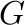
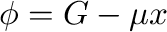
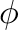
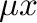

The output file of emc2 reports the value of all calculated thermodynamic functions for each
value of temperature and chemical potential scanned.
The quantities reported include
- Statistical averages over Monte Carlo steps, such as energy, concentration,
short-range and long-range order parameters.5.5
- Integrated statistical averages, such as the Gibbs free energy  or the semi-grand-canonical potential .
- The result of common approximations, namely, the low temperature expansion (LTE) [6,11,27], the mean-field (MF) approximation
and the high temperature expansion (HTE) (see, for instance, [6]).
While quantities obtained from statistical averages over Monte Carlo steps are valid for all temperatures and chemical potentials,
caution must be exercised when interpreting the result of the various approximations or when looking at the integrated quantities.
The LTE, MF and HTE approximations are only accurate in a limited range of temperature and it is the
responsibility of the user to assess this range of validity.
Also, the free energy or the semi-grand-canonical potential are obtained
from thermodynamic integration and are thus only valid if the starting point of the integration
is chosen appropriately.
By default, the low temperature expansion value is used as a starting point whenever the
phase of interest is a ground state, while the high temperature expansion is used when
the phase of interest is the disordered state.
Hence, to obtain absolute values of the semi-grand-canonical potential, one must ensure that
the calculations are started at a sufficiently low temperature (or sufficiently high temperature,
in the case of the disordered phase). This can be checked by comparing the Monte Carlo estimates with the LTE (or HTE) estimates and verifying that they agree for the first
few steps of the thermodynamic integration. A user-specified starting point for  (e.g. obtained from
an earlier Monte Carlo simulation) can be indicated using the option
Note that, unlike emc2, the phb code automatically makes use of the low temperature expansion whenever
it is sufficiently accurate in order to save a considerable amount of computational time.
By default, the code reports the thermodynamic quantities associated
with the semi-grand-canonical ensemble, such as the
semi-grand-canonical potential . The command-line option -can, instructs the code to add  to all
appropriate thermodynamic quantities, so that the code outputs the more commonly used canonical quantities, such as the
Gibbs free energy and the internal energy .
avdw@alum.mit.edu Wed, Dec 6, 2023 12:55:16 PM